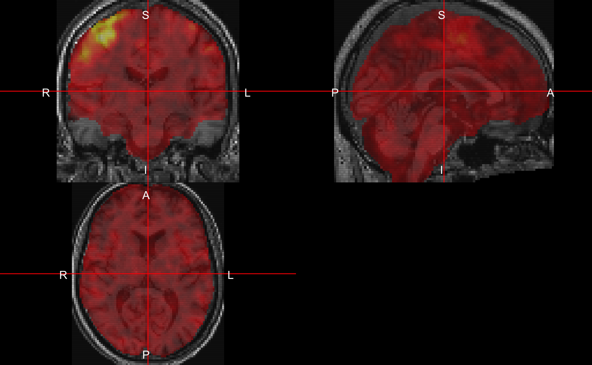
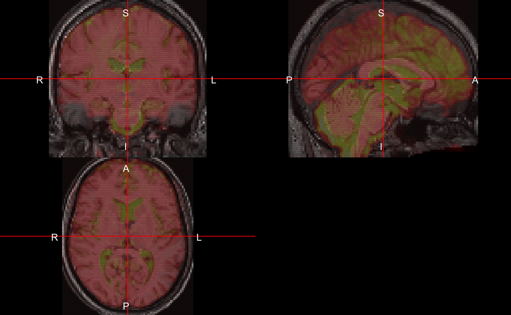
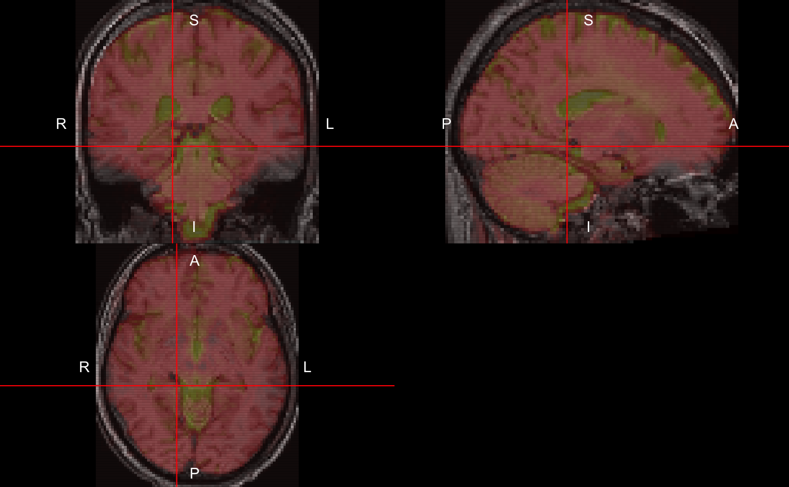

fmri_task_processing_acpc.Rmdspm12r functionsRequires MATLAB (installs SPM to R library)
spm12_slice_timing - slices are not taken instantaneouslyspm12_realign - people movespm12_coregister - structural imaging is higher resolutionspm12_segment - where’s the gray matter?spm12_normalize - brains look better in MNIspm12_smooth - turn that noise down
library(httr)
install_dir = tempdir()
url = paste0("https://ndownloader.figshare.com/articles/",
"5442298/versions/1")
zipfile = tempfile(fileext = ".zip")
res = GET(
url,
write_disk(path = zipfile),
if (interactive()) progress())
run_dir = tempfile()
if (!dir.exists(run_dir)) {
dir.create(run_dir)
}
out_files = utils::unzip(zipfile, exdir = run_dir)
names(out_files) = neurobase::nii.stub(
out_files, bn = TRUE)We know the repetition time (TR) is 2 seconds for this data. It may be encoded in the NIfTI file itself or come from a parameter file from the scanner. We will drop the first 20 seconds to allow for signal stabilization.
library(neurobase)
##################################
# Added quick reading of nifti header
##################################
oro_pkg = packageVersion("oro.nifti")
neuro_pkg = packageVersion("neurobase")
if (oro_pkg < 0.8 || neuro_pkg < 1.22) {
get_nifti = neurobase::check_nifti
} else {
get_nifti = neurobase::check_nifti_header
}
fmri_filename = out_files["fmri"]
t1_fname = out_files["anat"]
tr = 1.8 # seconds
hdr = get_nifti(fmri_filename) # getting nifti header
nslices = oro.nifti::nsli(hdr)
n_time_points = oro.nifti::ntim(hdr)
time_points = seq(n_time_points)
ta = 0
slice_order = c(
1740, 1680, 1620, 1560, 1500, 1440, 1380,
1320, 1260, 1200, 1140, 1080, 1020, 960,
900, 840, 780, 720, 660, 600, 540, 480,
420, 360, 300, 240, 180, 120, 60, 0,
1740, 1680, 1620, 1560, 1500, 1440, 1380,
1320, 1260, 1200, 1140, 1080, 1020, 960,
900, 840, 780, 720, 660, 600, 540, 480, 420,
360, 300, 240, 180, 120, 60, 0)
ref_slice = 900As SPM requires MATLAB and calls all the functions through the matlabr package, we will have checks in this vignette/workflow that the user has MATLAB. The have_matlab() function returns a logical that is TRUE when matlabr can find MATLAB to run the subsequent commands.
library(matlabr)
have_matlab()## [1] TRUEIf this is not TRUE, almost none of the functionality below will run because it would simply result in errors.
We will show how to do spatial realignment, slice-timing correction, spatial normalization to the MNI template (2 different ways), and spatial smoothing. Overall, there are many different ways to order these operations, with different options, so this represents just one way to organize a preprocessing pipeline.
Realignment is referring to in this case as within-subject registration of the 4D fMRI data.
library(spm12r)
####################################
# Realignment
####################################
if (have_matlab()) {
realigned = spm12_realign(
filename = fmri_filename,
time_points = time_points,
quality = 0.98,
separation = 3,
register_to = "mean",
est_interp = "bspline4",
reslice_interp = "bspline4",
clean = FALSE,
install_dir = install_dir
)
################################
# reading in the mean image
##########################
mean_img = realigned[["mean"]]
mean_nifti = readnii(mean_img)
rpfile = realigned[['rp']]
rp = read.table(file = rpfile, header = FALSE)
}## cloning into '/var/folders/1s/wrtqcpxn685_zk570bnx9_rr0000gr/T//RtmpkGRiPE/spm12'...
## Receiving objects: 1% (68/6722), 23 kb
## Receiving objects: 11% (740/6722), 2966 kb
## Receiving objects: 21% (1412/6722), 3317 kb
## Receiving objects: 31% (2084/6722), 9470 kb
## Receiving objects: 41% (2757/6722), 10988 kb
## Receiving objects: 51% (3429/6722), 31462 kb
## Receiving objects: 61% (4101/6722), 36480 kb
## Receiving objects: 71% (4773/6722), 46981 kb
## Receiving objects: 81% (5445/6722), 70571 kb
## Receiving objects: 91% (6118/6722), 99259 kb
## Receiving objects: 100% (6722/6722), 131273 kb, done.## # Reslice is all+mean## # Running matlabbatch job## # Creating matlabbatch job## # Adding SPMDIR: /var/folders/1s/wrtqcpxn685_zk570bnx9_rr0000gr/T//RtmpkGRiPE/spm12\n## Running job: /var/folders/1s/wrtqcpxn685_zk570bnx9_rr0000gr/T//RtmpkGRiPE/fileb24c3264a34c.m, which calls /var/folders/1s/wrtqcpxn685_zk570bnx9_rr0000gr/T//RtmpkGRiPE/fileb24c1ba225e0.m## Command run is:## matlab -nodesktop -nosplash -nodisplay -r "try, run('/var/folders/1s/wrtqcpxn685_zk570bnx9_rr0000gr/T//RtmpkGRiPE/fileb24c3264a34c.m'); catch err, disp(err.message); exit(1); end; exit(0);"## # Result is 0Overall the spm12_realign does the realignment. There is some discussion of performing realignment before slice-timing correction because estimation of motion parameters may be skewed after slice-timing correction. We see that the output realigned has the output 4D fMRI data (outfiles), the realignment parameters (rp), voxel-wise mean after realignment (mean), and the matrix of transformations for the 4D series (mat).
Here we can read in the rp file to show the estimated parameters. These can be used as regressors in motion correction for further analyses.
####################################
# Read in Motion data
####################################
if (have_matlab()) {
rpfile = realigned[['rp']]
rp = read.table(file = rpfile, header = FALSE)
colnames(rp) = c("x", "y", "z",
"roll", "pitch", "yaw")
rp = as.matrix(rp)
print(head(rp))
print(dim(rp))
}## x y z roll pitch
## [1,] 0.0000000000 0.00000000 0.000000000 0.0000000000 0.000000e+00
## [2,] 0.0048211607 -0.05013463 -0.060077472 -0.0004428566 6.155483e-05
## [3,] 0.0157221950 -0.04831228 0.049669019 -0.0002809896 -4.321093e-05
## [4,] 0.0081128381 -0.04362921 -0.086630878 -0.0001192797 -1.334368e-05
## [5,] 0.0255457440 -0.07977505 0.001169408 -0.0003435793 -1.783017e-04
## [6,] 0.0007600395 -0.03691525 -0.078877335 0.0000856010 -1.312280e-04
## yaw
## [1,] 0.000000e+00
## [2,] -1.649043e-05
## [3,] -1.591068e-04
## [4,] -9.216786e-05
## [5,] -6.443807e-05
## [6,] 5.631540e-06
## [1] 280 6A slice-timing correction does interpolation since each slice was not actually taken at the same time point, but a shifted time point over the course of an entire TR. The correction requires you to input the reference slice (in this case the median, ref_slice), the repetition time (tr), time between the first and the last slice within one scan (ta), and the order the slices were acquired. In our case, it was done in an ascending, contiguous order, so we created the slice order as such. If you used descending or interleaved acquisition, then this must be changed accordingly.
####################################
# Slice Timing Correction
####################################
if (have_matlab()) {
aimg = spm12_slice_timing(
filename = realigned[['outfiles']],
nslices = nslices,
tr = tr,
slice_order = slice_order,
time_points = seq(n_time_points),
ta = ta,
ref_slice = ref_slice,
prefix = "a",
clean = FALSE,
retimg = FALSE,
install_dir = install_dir
)
print(aimg)
}## # Running matlabbatch job## # Creating matlabbatch job## # Adding SPMDIR: /var/folders/1s/wrtqcpxn685_zk570bnx9_rr0000gr/T//RtmpkGRiPE/spm12\n## Running job: /var/folders/1s/wrtqcpxn685_zk570bnx9_rr0000gr/T//RtmpkGRiPE/fileb24c407f01f2.m, which calls /var/folders/1s/wrtqcpxn685_zk570bnx9_rr0000gr/T//RtmpkGRiPE/fileb24c143b4a1e.m## Command run is:## matlab -nodesktop -nosplash -nodisplay -r "try, run('/var/folders/1s/wrtqcpxn685_zk570bnx9_rr0000gr/T//RtmpkGRiPE/fileb24c407f01f2.m'); catch err, disp(err.message); exit(1); end; exit(0);"## # Result is 0## $spm
## $spm
## $spm$temporal
## $spm$temporal$st
## $spm$temporal$st$scans
## [1] "{{'/var/folders/1s/wrtqcpxn685_zk570bnx9_rr0000gr/T//RtmpkGRiPE/fileb24c366d45d3/rfmri.nii,1'\n '/var/folders/1s/wrtqcpxn685_zk570bnx9_rr0000gr/T//RtmpkGRiPE/fileb24c366d45d3/rfmri.nii,2'\n '/var/folders/1s/wrtqcpxn685_zk570bnx9_rr0000gr/T//RtmpkGRiPE/fileb24c366d45d3/rfmri.nii,3'\n '/var/folders/1s/wrtqcpxn685_zk570bnx9_rr0000gr/T//RtmpkGRiPE/fileb24c366d45d3/rfmri.nii,4'\n '/var/folders/1s/wrtqcpxn685_zk570bnx9_rr0000gr/T//RtmpkGRiPE/fileb24c366d45d3/rfmri.nii,5'\n '/var/folders/1s/wrtqcpxn685_zk570bnx9_rr0000gr/T//RtmpkGRiPE/fileb24c366d45d3/rfmri.nii,6'\n '/var/folders/1s/wrtqcpxn685_zk570bnx9_rr0000gr/T//RtmpkGRiPE/fileb24c366d45d3/rfmri.nii,7'\n '/var/folders/1s/wrtqcpxn685_zk570bnx9_rr0000gr/T//RtmpkGRiPE/fileb24c366d45d3/rfmri.nii,8'\n '/var/folders/1s/wrtqcpxn685_zk570bnx9_rr0000gr/T//RtmpkGRiPE/fileb24c366d45d3/rfmri.nii,9'\n '/var/folders/1s/wrtqcpxn685_zk570bnx9_rr0000gr/T//RtmpkGRiPE/fileb24c366d45d3/rfmri.nii,10'\n '/var/folders/1s/wrtqcpxn685_zk570bnx9_rr0000gr/T//RtmpkGRiPE/fileb24c366d45d3/rfmri.nii,11'\n '/var/folders/1s/wrtqcpxn685_zk570bnx9_rr0000gr/T//RtmpkGRiPE/fileb24c366d45d3/rfmri.nii,12'\n '/var/folders/1s/wrtqcpxn685_zk570bnx9_rr0000gr/T//RtmpkGRiPE/fileb24c366d45d3/rfmri.nii,13'\n '/var/folders/1s/wrtqcpxn685_zk570bnx9_rr0000gr/T//RtmpkGRiPE/fileb24c366d45d3/rfmri.nii,14'\n '/var/folders/1s/wrtqcpxn685_zk570bnx9_rr0000gr/T//RtmpkGRiPE/fileb24c366d45d3/rfmri.nii,15'\n '/var/folders/1s/wrtqcpxn685_zk570bnx9_rr0000gr/T//RtmpkGRiPE/fileb24c366d45d3/rfmri.nii,16'\n '/var/folders/1s/wrtqcpxn685_zk570bnx9_rr0000gr/T//RtmpkGRiPE/fileb24c366d45d3/rfmri.nii,17'\n '/var/folders/1s/wrtqcpxn685_zk570bnx9_rr0000gr/T//RtmpkGRiPE/fileb24c366d45d3/rfmri.nii,18'\n '/var/folders/1s/wrtqcpxn685_zk570bnx9_rr0000gr/T//RtmpkGRiPE/fileb24c366d45d3/rfmri.nii,19'\n '/var/folders/1s/wrtqcpxn685_zk570bnx9_rr0000gr/T//RtmpkGRiPE/fileb24c366d45d3/rfmri.nii,20'\n '/var/folders/1s/wrtqcpxn685_zk570bnx9_rr0000gr/T//RtmpkGRiPE/fileb24c366d45d3/rfmri.nii,21'\n '/var/folders/1s/wrtqcpxn685_zk570bnx9_rr0000gr/T//RtmpkGRiPE/fileb24c366d45d3/rfmri.nii,22'\n '/var/folders/1s/wrtqcpxn685_zk570bnx9_rr0000gr/T//RtmpkGRiPE/fileb24c366d45d3/rfmri.nii,23'\n '/var/folders/1s/wrtqcpxn685_zk570bnx9_rr0000gr/T//RtmpkGRiPE/fileb24c366d45d3/rfmri.nii,24'\n '/var/folders/1s/wrtqcpxn685_zk570bnx9_rr0000gr/T//RtmpkGRiPE/fileb24c366d45d3/rfmri.nii,25'\n '/var/folders/1s/wrtqcpxn685_zk570bnx9_rr0000gr/T//RtmpkGRiPE/fileb24c366d45d3/rfmri.nii,26'\n '/var/folders/1s/wrtqcpxn685_zk570bnx9_rr0000gr/T//RtmpkGRiPE/fileb24c366d45d3/rfmri.nii,27'\n '/var/folders/1s/wrtqcpxn685_zk570bnx9_rr0000gr/T//RtmpkGRiPE/fileb24c366d45d3/rfmri.nii,28'\n '/var/folders/1s/wrtqcpxn685_zk570bnx9_rr0000gr/T//RtmpkGRiPE/fileb24c366d45d3/rfmri.nii,29'\n '/var/folders/1s/wrtqcpxn685_zk570bnx9_rr0000gr/T//RtmpkGRiPE/fileb24c366d45d3/rfmri.nii,30'\n '/var/folders/1s/wrtqcpxn685_zk570bnx9_rr0000gr/T//RtmpkGRiPE/fileb24c366d45d3/rfmri.nii,31'\n '/var/folders/1s/wrtqcpxn685_zk570bnx9_rr0000gr/T//RtmpkGRiPE/fileb24c366d45d3/rfmri.nii,32'\n '/var/folders/1s/wrtqcpxn685_zk570bnx9_rr0000gr/T//RtmpkGRiPE/fileb24c366d45d3/rfmri.nii,33'\n '/var/folders/1s/wrtqcpxn685_zk570bnx9_rr0000gr/T//RtmpkGRiPE/fileb24c366d45d3/rfmri.nii,34'\n '/var/folders/1s/wrtqcpxn685_zk570bnx9_rr0000gr/T//RtmpkGRiPE/fileb24c366d45d3/rfmri.nii,35'\n '/var/folders/1s/wrtqcpxn685_zk570bnx9_rr0000gr/T//RtmpkGRiPE/fileb24c366d45d3/rfmri.nii,36'\n '/var/folders/1s/wrtqcpxn685_zk570bnx9_rr0000gr/T//RtmpkGRiPE/fileb24c366d45d3/rfmri.nii,37'\n '/var/folders/1s/wrtqcpxn685_zk570bnx9_rr0000gr/T//RtmpkGRiPE/fileb24c366d45d3/rfmri.nii,38'\n '/var/folders/1s/wrtqcpxn685_zk570bnx9_rr0000gr/T//RtmpkGRiPE/fileb24c366d45d3/rfmri.nii,39'\n '/var/folders/1s/wrtqcpxn685_zk570bnx9_rr0000gr/T//RtmpkGRiPE/fileb24c366d45d3/rfmri.nii,40'\n '/var/folders/1s/wrtqcpxn685_zk570bnx9_rr0000gr/T//RtmpkGRiPE/fileb24c366d45d3/rfmri.nii,41'\n '/var/folders/1s/wrtqcpxn685_zk570bnx9_rr0000gr/T//RtmpkGRiPE/fileb24c366d45d3/rfmri.nii,42'\n '/var/folders/1s/wrtqcpxn685_zk570bnx9_rr0000gr/T//RtmpkGRiPE/fileb24c366d45d3/rfmri.nii,43'\n '/var/folders/1s/wrtqcpxn685_zk570bnx9_rr0000gr/T//RtmpkGRiPE/fileb24c366d45d3/rfmri.nii,44'\n '/var/folders/1s/wrtqcpxn685_zk570bnx9_rr0000gr/T//RtmpkGRiPE/fileb24c366d45d3/rfmri.nii,45'\n '/var/folders/1s/wrtqcpxn685_zk570bnx9_rr0000gr/T//RtmpkGRiPE/fileb24c366d45d3/rfmri.nii,46'\n '/var/folders/1s/wrtqcpxn685_zk570bnx9_rr0000gr/T//RtmpkGRiPE/fileb24c366d45d3/rfmri.nii,47'\n '/var/folders/1s/wrtqcpxn685_zk570bnx9_rr0000gr/T//RtmpkGRiPE/fileb24c366d45d3/rfmri.nii,48'\n '/var/folders/1s/wrtqcpxn685_zk570bnx9_rr0000gr/T//RtmpkGRiPE/fileb24c366d45d3/rfmri.nii,49'\n '/var/folders/1s/wrtqcpxn685_zk570bnx9_rr0000gr/T//RtmpkGRiPE/fileb24c366d45d3/rfmri.nii,50'\n '/var/folders/1s/wrtqcpxn685_zk570bnx9_rr0000gr/T//RtmpkGRiPE/fileb24c366d45d3/rfmri.nii,51'\n '/var/folders/1s/wrtqcpxn685_zk570bnx9_rr0000gr/T//RtmpkGRiPE/fileb24c366d45d3/rfmri.nii,52'\n '/var/folders/1s/wrtqcpxn685_zk570bnx9_rr0000gr/T//RtmpkGRiPE/fileb24c366d45d3/rfmri.nii,53'\n '/var/folders/1s/wrtqcpxn685_zk570bnx9_rr0000gr/T//RtmpkGRiPE/fileb24c366d45d3/rfmri.nii,54'\n '/var/folders/1s/wrtqcpxn685_zk570bnx9_rr0000gr/T//RtmpkGRiPE/fileb24c366d45d3/rfmri.nii,55'\n '/var/folders/1s/wrtqcpxn685_zk570bnx9_rr0000gr/T//RtmpkGRiPE/fileb24c366d45d3/rfmri.nii,56'\n '/var/folders/1s/wrtqcpxn685_zk570bnx9_rr0000gr/T//RtmpkGRiPE/fileb24c366d45d3/rfmri.nii,57'\n '/var/folders/1s/wrtqcpxn685_zk570bnx9_rr0000gr/T//RtmpkGRiPE/fileb24c366d45d3/rfmri.nii,58'\n '/var/folders/1s/wrtqcpxn685_zk570bnx9_rr0000gr/T//RtmpkGRiPE/fileb24c366d45d3/rfmri.nii,59'\n '/var/folders/1s/wrtqcpxn685_zk570bnx9_rr0000gr/T//RtmpkGRiPE/fileb24c366d45d3/rfmri.nii,60'\n '/var/folders/1s/wrtqcpxn685_zk570bnx9_rr0000gr/T//RtmpkGRiPE/fileb24c366d45d3/rfmri.nii,61'\n '/var/folders/1s/wrtqcpxn685_zk570bnx9_rr0000gr/T//RtmpkGRiPE/fileb24c366d45d3/rfmri.nii,62'\n '/var/folders/1s/wrtqcpxn685_zk570bnx9_rr0000gr/T//RtmpkGRiPE/fileb24c366d45d3/rfmri.nii,63'\n '/var/folders/1s/wrtqcpxn685_zk570bnx9_rr0000gr/T//RtmpkGRiPE/fileb24c366d45d3/rfmri.nii,64'\n '/var/folders/1s/wrtqcpxn685_zk570bnx9_rr0000gr/T//RtmpkGRiPE/fileb24c366d45d3/rfmri.nii,65'\n '/var/folders/1s/wrtqcpxn685_zk570bnx9_rr0000gr/T//RtmpkGRiPE/fileb24c366d45d3/rfmri.nii,66'\n '/var/folders/1s/wrtqcpxn685_zk570bnx9_rr0000gr/T//RtmpkGRiPE/fileb24c366d45d3/rfmri.nii,67'\n '/var/folders/1s/wrtqcpxn685_zk570bnx9_rr0000gr/T//RtmpkGRiPE/fileb24c366d45d3/rfmri.nii,68'\n '/var/folders/1s/wrtqcpxn685_zk570bnx9_rr0000gr/T//RtmpkGRiPE/fileb24c366d45d3/rfmri.nii,69'\n '/var/folders/1s/wrtqcpxn685_zk570bnx9_rr0000gr/T//RtmpkGRiPE/fileb24c366d45d3/rfmri.nii,70'\n '/var/folders/1s/wrtqcpxn685_zk570bnx9_rr0000gr/T//RtmpkGRiPE/fileb24c366d45d3/rfmri.nii,71'\n '/var/folders/1s/wrtqcpxn685_zk570bnx9_rr0000gr/T//RtmpkGRiPE/fileb24c366d45d3/rfmri.nii,72'\n '/var/folders/1s/wrtqcpxn685_zk570bnx9_rr0000gr/T//RtmpkGRiPE/fileb24c366d45d3/rfmri.nii,73'\n '/var/folders/1s/wrtqcpxn685_zk570bnx9_rr0000gr/T//RtmpkGRiPE/fileb24c366d45d3/rfmri.nii,74'\n '/var/folders/1s/wrtqcpxn685_zk570bnx9_rr0000gr/T//RtmpkGRiPE/fileb24c366d45d3/rfmri.nii,75'\n '/var/folders/1s/wrtqcpxn685_zk570bnx9_rr0000gr/T//RtmpkGRiPE/fileb24c366d45d3/rfmri.nii,76'\n '/var/folders/1s/wrtqcpxn685_zk570bnx9_rr0000gr/T//RtmpkGRiPE/fileb24c366d45d3/rfmri.nii,77'\n '/var/folders/1s/wrtqcpxn685_zk570bnx9_rr0000gr/T//RtmpkGRiPE/fileb24c366d45d3/rfmri.nii,78'\n '/var/folders/1s/wrtqcpxn685_zk570bnx9_rr0000gr/T//RtmpkGRiPE/fileb24c366d45d3/rfmri.nii,79'\n '/var/folders/1s/wrtqcpxn685_zk570bnx9_rr0000gr/T//RtmpkGRiPE/fileb24c366d45d3/rfmri.nii,80'\n '/var/folders/1s/wrtqcpxn685_zk570bnx9_rr0000gr/T//RtmpkGRiPE/fileb24c366d45d3/rfmri.nii,81'\n '/var/folders/1s/wrtqcpxn685_zk570bnx9_rr0000gr/T//RtmpkGRiPE/fileb24c366d45d3/rfmri.nii,82'\n '/var/folders/1s/wrtqcpxn685_zk570bnx9_rr0000gr/T//RtmpkGRiPE/fileb24c366d45d3/rfmri.nii,83'\n '/var/folders/1s/wrtqcpxn685_zk570bnx9_rr0000gr/T//RtmpkGRiPE/fileb24c366d45d3/rfmri.nii,84'\n '/var/folders/1s/wrtqcpxn685_zk570bnx9_rr0000gr/T//RtmpkGRiPE/fileb24c366d45d3/rfmri.nii,85'\n '/var/folders/1s/wrtqcpxn685_zk570bnx9_rr0000gr/T//RtmpkGRiPE/fileb24c366d45d3/rfmri.nii,86'\n '/var/folders/1s/wrtqcpxn685_zk570bnx9_rr0000gr/T//RtmpkGRiPE/fileb24c366d45d3/rfmri.nii,87'\n '/var/folders/1s/wrtqcpxn685_zk570bnx9_rr0000gr/T//RtmpkGRiPE/fileb24c366d45d3/rfmri.nii,88'\n '/var/folders/1s/wrtqcpxn685_zk570bnx9_rr0000gr/T//RtmpkGRiPE/fileb24c366d45d3/rfmri.nii,89'\n '/var/folders/1s/wrtqcpxn685_zk570bnx9_rr0000gr/T//RtmpkGRiPE/fileb24c366d45d3/rfmri.nii,90'\n '/var/folders/1s/wrtqcpxn685_zk570bnx9_rr0000gr/T//RtmpkGRiPE/fileb24c366d45d3/rfmri.nii,91'\n '/var/folders/1s/wrtqcpxn685_zk570bnx9_rr0000gr/T//RtmpkGRiPE/fileb24c366d45d3/rfmri.nii,92'\n '/var/folders/1s/wrtqcpxn685_zk570bnx9_rr0000gr/T//RtmpkGRiPE/fileb24c366d45d3/rfmri.nii,93'\n '/var/folders/1s/wrtqcpxn685_zk570bnx9_rr0000gr/T//RtmpkGRiPE/fileb24c366d45d3/rfmri.nii,94'\n '/var/folders/1s/wrtqcpxn685_zk570bnx9_rr0000gr/T//RtmpkGRiPE/fileb24c366d45d3/rfmri.nii,95'\n '/var/folders/1s/wrtqcpxn685_zk570bnx9_rr0000gr/T//RtmpkGRiPE/fileb24c366d45d3/rfmri.nii,96'\n '/var/folders/1s/wrtqcpxn685_zk570bnx9_rr0000gr/T//RtmpkGRiPE/fileb24c366d45d3/rfmri.nii,97'\n '/var/folders/1s/wrtqcpxn685_zk570bnx9_rr0000gr/T//RtmpkGRiPE/fileb24c366d45d3/rfmri.nii,98'\n '/var/folders/1s/wrtqcpxn685_zk570bnx9_rr0000gr/T//RtmpkGRiPE/fileb24c366d45d3/rfmri.nii,99'\n '/var/folders/1s/wrtqcpxn685_zk570bnx9_rr0000gr/T//RtmpkGRiPE/fileb24c366d45d3/rfmri.nii,100'\n '/var/folders/1s/wrtqcpxn685_zk570bnx9_rr0000gr/T//RtmpkGRiPE/fileb24c366d45d3/rfmri.nii,101'\n '/var/folders/1s/wrtqcpxn685_zk570bnx9_rr0000gr/T//RtmpkGRiPE/fileb24c366d45d3/rfmri.nii,102'\n '/var/folders/1s/wrtqcpxn685_zk570bnx9_rr0000gr/T//RtmpkGRiPE/fileb24c366d45d3/rfmri.nii,103'\n '/var/folders/1s/wrtqcpxn685_zk570bnx9_rr0000gr/T//RtmpkGRiPE/fileb24c366d45d3/rfmri.nii,104'\n '/var/folders/1s/wrtqcpxn685_zk570bnx9_rr0000gr/T//RtmpkGRiPE/fileb24c366d45d3/rfmri.nii,105'\n '/var/folders/1s/wrtqcpxn685_zk570bnx9_rr0000gr/T//RtmpkGRiPE/fileb24c366d45d3/rfmri.nii,106'\n '/var/folders/1s/wrtqcpxn685_zk570bnx9_rr0000gr/T//RtmpkGRiPE/fileb24c366d45d3/rfmri.nii,107'\n '/var/folders/1s/wrtqcpxn685_zk570bnx9_rr0000gr/T//RtmpkGRiPE/fileb24c366d45d3/rfmri.nii,108'\n '/var/folders/1s/wrtqcpxn685_zk570bnx9_rr0000gr/T//RtmpkGRiPE/fileb24c366d45d3/rfmri.nii,109'\n '/var/folders/1s/wrtqcpxn685_zk570bnx9_rr0000gr/T//RtmpkGRiPE/fileb24c366d45d3/rfmri.nii,110'\n '/var/folders/1s/wrtqcpxn685_zk570bnx9_rr0000gr/T//RtmpkGRiPE/fileb24c366d45d3/rfmri.nii,111'\n '/var/folders/1s/wrtqcpxn685_zk570bnx9_rr0000gr/T//RtmpkGRiPE/fileb24c366d45d3/rfmri.nii,112'\n '/var/folders/1s/wrtqcpxn685_zk570bnx9_rr0000gr/T//RtmpkGRiPE/fileb24c366d45d3/rfmri.nii,113'\n '/var/folders/1s/wrtqcpxn685_zk570bnx9_rr0000gr/T//RtmpkGRiPE/fileb24c366d45d3/rfmri.nii,114'\n '/var/folders/1s/wrtqcpxn685_zk570bnx9_rr0000gr/T//RtmpkGRiPE/fileb24c366d45d3/rfmri.nii,115'\n '/var/folders/1s/wrtqcpxn685_zk570bnx9_rr0000gr/T//RtmpkGRiPE/fileb24c366d45d3/rfmri.nii,116'\n '/var/folders/1s/wrtqcpxn685_zk570bnx9_rr0000gr/T//RtmpkGRiPE/fileb24c366d45d3/rfmri.nii,117'\n '/var/folders/1s/wrtqcpxn685_zk570bnx9_rr0000gr/T//RtmpkGRiPE/fileb24c366d45d3/rfmri.nii,118'\n '/var/folders/1s/wrtqcpxn685_zk570bnx9_rr0000gr/T//RtmpkGRiPE/fileb24c366d45d3/rfmri.nii,119'\n '/var/folders/1s/wrtqcpxn685_zk570bnx9_rr0000gr/T//RtmpkGRiPE/fileb24c366d45d3/rfmri.nii,120'\n '/var/folders/1s/wrtqcpxn685_zk570bnx9_rr0000gr/T//RtmpkGRiPE/fileb24c366d45d3/rfmri.nii,121'\n '/var/folders/1s/wrtqcpxn685_zk570bnx9_rr0000gr/T//RtmpkGRiPE/fileb24c366d45d3/rfmri.nii,122'\n '/var/folders/1s/wrtqcpxn685_zk570bnx9_rr0000gr/T//RtmpkGRiPE/fileb24c366d45d3/rfmri.nii,123'\n '/var/folders/1s/wrtqcpxn685_zk570bnx9_rr0000gr/T//RtmpkGRiPE/fileb24c366d45d3/rfmri.nii,124'\n '/var/folders/1s/wrtqcpxn685_zk570bnx9_rr0000gr/T//RtmpkGRiPE/fileb24c366d45d3/rfmri.nii,125'\n '/var/folders/1s/wrtqcpxn685_zk570bnx9_rr0000gr/T//RtmpkGRiPE/fileb24c366d45d3/rfmri.nii,126'\n '/var/folders/1s/wrtqcpxn685_zk570bnx9_rr0000gr/T//RtmpkGRiPE/fileb24c366d45d3/rfmri.nii,127'\n '/var/folders/1s/wrtqcpxn685_zk570bnx9_rr0000gr/T//RtmpkGRiPE/fileb24c366d45d3/rfmri.nii,128'\n '/var/folders/1s/wrtqcpxn685_zk570bnx9_rr0000gr/T//RtmpkGRiPE/fileb24c366d45d3/rfmri.nii,129'\n '/var/folders/1s/wrtqcpxn685_zk570bnx9_rr0000gr/T//RtmpkGRiPE/fileb24c366d45d3/rfmri.nii,130'\n '/var/folders/1s/wrtqcpxn685_zk570bnx9_rr0000gr/T//RtmpkGRiPE/fileb24c366d45d3/rfmri.nii,131'\n '/var/folders/1s/wrtqcpxn685_zk570bnx9_rr0000gr/T//RtmpkGRiPE/fileb24c366d45d3/rfmri.nii,132'\n '/var/folders/1s/wrtqcpxn685_zk570bnx9_rr0000gr/T//RtmpkGRiPE/fileb24c366d45d3/rfmri.nii,133'\n '/var/folders/1s/wrtqcpxn685_zk570bnx9_rr0000gr/T//RtmpkGRiPE/fileb24c366d45d3/rfmri.nii,134'\n '/var/folders/1s/wrtqcpxn685_zk570bnx9_rr0000gr/T//RtmpkGRiPE/fileb24c366d45d3/rfmri.nii,135'\n '/var/folders/1s/wrtqcpxn685_zk570bnx9_rr0000gr/T//RtmpkGRiPE/fileb24c366d45d3/rfmri.nii,136'\n '/var/folders/1s/wrtqcpxn685_zk570bnx9_rr0000gr/T//RtmpkGRiPE/fileb24c366d45d3/rfmri.nii,137'\n '/var/folders/1s/wrtqcpxn685_zk570bnx9_rr0000gr/T//RtmpkGRiPE/fileb24c366d45d3/rfmri.nii,138'\n '/var/folders/1s/wrtqcpxn685_zk570bnx9_rr0000gr/T//RtmpkGRiPE/fileb24c366d45d3/rfmri.nii,139'\n '/var/folders/1s/wrtqcpxn685_zk570bnx9_rr0000gr/T//RtmpkGRiPE/fileb24c366d45d3/rfmri.nii,140'\n '/var/folders/1s/wrtqcpxn685_zk570bnx9_rr0000gr/T//RtmpkGRiPE/fileb24c366d45d3/rfmri.nii,141'\n '/var/folders/1s/wrtqcpxn685_zk570bnx9_rr0000gr/T//RtmpkGRiPE/fileb24c366d45d3/rfmri.nii,142'\n '/var/folders/1s/wrtqcpxn685_zk570bnx9_rr0000gr/T//RtmpkGRiPE/fileb24c366d45d3/rfmri.nii,143'\n '/var/folders/1s/wrtqcpxn685_zk570bnx9_rr0000gr/T//RtmpkGRiPE/fileb24c366d45d3/rfmri.nii,144'\n '/var/folders/1s/wrtqcpxn685_zk570bnx9_rr0000gr/T//RtmpkGRiPE/fileb24c366d45d3/rfmri.nii,145'\n '/var/folders/1s/wrtqcpxn685_zk570bnx9_rr0000gr/T//RtmpkGRiPE/fileb24c366d45d3/rfmri.nii,146'\n '/var/folders/1s/wrtqcpxn685_zk570bnx9_rr0000gr/T//RtmpkGRiPE/fileb24c366d45d3/rfmri.nii,147'\n '/var/folders/1s/wrtqcpxn685_zk570bnx9_rr0000gr/T//RtmpkGRiPE/fileb24c366d45d3/rfmri.nii,148'\n '/var/folders/1s/wrtqcpxn685_zk570bnx9_rr0000gr/T//RtmpkGRiPE/fileb24c366d45d3/rfmri.nii,149'\n '/var/folders/1s/wrtqcpxn685_zk570bnx9_rr0000gr/T//RtmpkGRiPE/fileb24c366d45d3/rfmri.nii,150'\n '/var/folders/1s/wrtqcpxn685_zk570bnx9_rr0000gr/T//RtmpkGRiPE/fileb24c366d45d3/rfmri.nii,151'\n '/var/folders/1s/wrtqcpxn685_zk570bnx9_rr0000gr/T//RtmpkGRiPE/fileb24c366d45d3/rfmri.nii,152'\n '/var/folders/1s/wrtqcpxn685_zk570bnx9_rr0000gr/T//RtmpkGRiPE/fileb24c366d45d3/rfmri.nii,153'\n '/var/folders/1s/wrtqcpxn685_zk570bnx9_rr0000gr/T//RtmpkGRiPE/fileb24c366d45d3/rfmri.nii,154'\n '/var/folders/1s/wrtqcpxn685_zk570bnx9_rr0000gr/T//RtmpkGRiPE/fileb24c366d45d3/rfmri.nii,155'\n '/var/folders/1s/wrtqcpxn685_zk570bnx9_rr0000gr/T//RtmpkGRiPE/fileb24c366d45d3/rfmri.nii,156'\n '/var/folders/1s/wrtqcpxn685_zk570bnx9_rr0000gr/T//RtmpkGRiPE/fileb24c366d45d3/rfmri.nii,157'\n '/var/folders/1s/wrtqcpxn685_zk570bnx9_rr0000gr/T//RtmpkGRiPE/fileb24c366d45d3/rfmri.nii,158'\n '/var/folders/1s/wrtqcpxn685_zk570bnx9_rr0000gr/T//RtmpkGRiPE/fileb24c366d45d3/rfmri.nii,159'\n '/var/folders/1s/wrtqcpxn685_zk570bnx9_rr0000gr/T//RtmpkGRiPE/fileb24c366d45d3/rfmri.nii,160'\n '/var/folders/1s/wrtqcpxn685_zk570bnx9_rr0000gr/T//RtmpkGRiPE/fileb24c366d45d3/rfmri.nii,161'\n '/var/folders/1s/wrtqcpxn685_zk570bnx9_rr0000gr/T//RtmpkGRiPE/fileb24c366d45d3/rfmri.nii,162'\n '/var/folders/1s/wrtqcpxn685_zk570bnx9_rr0000gr/T//RtmpkGRiPE/fileb24c366d45d3/rfmri.nii,163'\n '/var/folders/1s/wrtqcpxn685_zk570bnx9_rr0000gr/T//RtmpkGRiPE/fileb24c366d45d3/rfmri.nii,164'\n '/var/folders/1s/wrtqcpxn685_zk570bnx9_rr0000gr/T//RtmpkGRiPE/fileb24c366d45d3/rfmri.nii,165'\n '/var/folders/1s/wrtqcpxn685_zk570bnx9_rr0000gr/T//RtmpkGRiPE/fileb24c366d45d3/rfmri.nii,166'\n '/var/folders/1s/wrtqcpxn685_zk570bnx9_rr0000gr/T//RtmpkGRiPE/fileb24c366d45d3/rfmri.nii,167'\n '/var/folders/1s/wrtqcpxn685_zk570bnx9_rr0000gr/T//RtmpkGRiPE/fileb24c366d45d3/rfmri.nii,168'\n '/var/folders/1s/wrtqcpxn685_zk570bnx9_rr0000gr/T//RtmpkGRiPE/fileb24c366d45d3/rfmri.nii,169'\n '/var/folders/1s/wrtqcpxn685_zk570bnx9_rr0000gr/T//RtmpkGRiPE/fileb24c366d45d3/rfmri.nii,170'\n '/var/folders/1s/wrtqcpxn685_zk570bnx9_rr0000gr/T//RtmpkGRiPE/fileb24c366d45d3/rfmri.nii,171'\n '/var/folders/1s/wrtqcpxn685_zk570bnx9_rr0000gr/T//RtmpkGRiPE/fileb24c366d45d3/rfmri.nii,172'\n '/var/folders/1s/wrtqcpxn685_zk570bnx9_rr0000gr/T//RtmpkGRiPE/fileb24c366d45d3/rfmri.nii,173'\n '/var/folders/1s/wrtqcpxn685_zk570bnx9_rr0000gr/T//RtmpkGRiPE/fileb24c366d45d3/rfmri.nii,174'\n '/var/folders/1s/wrtqcpxn685_zk570bnx9_rr0000gr/T//RtmpkGRiPE/fileb24c366d45d3/rfmri.nii,175'\n '/var/folders/1s/wrtqcpxn685_zk570bnx9_rr0000gr/T//RtmpkGRiPE/fileb24c366d45d3/rfmri.nii,176'\n '/var/folders/1s/wrtqcpxn685_zk570bnx9_rr0000gr/T//RtmpkGRiPE/fileb24c366d45d3/rfmri.nii,177'\n '/var/folders/1s/wrtqcpxn685_zk570bnx9_rr0000gr/T//RtmpkGRiPE/fileb24c366d45d3/rfmri.nii,178'\n '/var/folders/1s/wrtqcpxn685_zk570bnx9_rr0000gr/T//RtmpkGRiPE/fileb24c366d45d3/rfmri.nii,179'\n '/var/folders/1s/wrtqcpxn685_zk570bnx9_rr0000gr/T//RtmpkGRiPE/fileb24c366d45d3/rfmri.nii,180'\n '/var/folders/1s/wrtqcpxn685_zk570bnx9_rr0000gr/T//RtmpkGRiPE/fileb24c366d45d3/rfmri.nii,181'\n '/var/folders/1s/wrtqcpxn685_zk570bnx9_rr0000gr/T//RtmpkGRiPE/fileb24c366d45d3/rfmri.nii,182'\n '/var/folders/1s/wrtqcpxn685_zk570bnx9_rr0000gr/T//RtmpkGRiPE/fileb24c366d45d3/rfmri.nii,183'\n '/var/folders/1s/wrtqcpxn685_zk570bnx9_rr0000gr/T//RtmpkGRiPE/fileb24c366d45d3/rfmri.nii,184'\n '/var/folders/1s/wrtqcpxn685_zk570bnx9_rr0000gr/T//RtmpkGRiPE/fileb24c366d45d3/rfmri.nii,185'\n '/var/folders/1s/wrtqcpxn685_zk570bnx9_rr0000gr/T//RtmpkGRiPE/fileb24c366d45d3/rfmri.nii,186'\n '/var/folders/1s/wrtqcpxn685_zk570bnx9_rr0000gr/T//RtmpkGRiPE/fileb24c366d45d3/rfmri.nii,187'\n '/var/folders/1s/wrtqcpxn685_zk570bnx9_rr0000gr/T//RtmpkGRiPE/fileb24c366d45d3/rfmri.nii,188'\n '/var/folders/1s/wrtqcpxn685_zk570bnx9_rr0000gr/T//RtmpkGRiPE/fileb24c366d45d3/rfmri.nii,189'\n '/var/folders/1s/wrtqcpxn685_zk570bnx9_rr0000gr/T//RtmpkGRiPE/fileb24c366d45d3/rfmri.nii,190'\n '/var/folders/1s/wrtqcpxn685_zk570bnx9_rr0000gr/T//RtmpkGRiPE/fileb24c366d45d3/rfmri.nii,191'\n '/var/folders/1s/wrtqcpxn685_zk570bnx9_rr0000gr/T//RtmpkGRiPE/fileb24c366d45d3/rfmri.nii,192'\n '/var/folders/1s/wrtqcpxn685_zk570bnx9_rr0000gr/T//RtmpkGRiPE/fileb24c366d45d3/rfmri.nii,193'\n '/var/folders/1s/wrtqcpxn685_zk570bnx9_rr0000gr/T//RtmpkGRiPE/fileb24c366d45d3/rfmri.nii,194'\n '/var/folders/1s/wrtqcpxn685_zk570bnx9_rr0000gr/T//RtmpkGRiPE/fileb24c366d45d3/rfmri.nii,195'\n '/var/folders/1s/wrtqcpxn685_zk570bnx9_rr0000gr/T//RtmpkGRiPE/fileb24c366d45d3/rfmri.nii,196'\n '/var/folders/1s/wrtqcpxn685_zk570bnx9_rr0000gr/T//RtmpkGRiPE/fileb24c366d45d3/rfmri.nii,197'\n '/var/folders/1s/wrtqcpxn685_zk570bnx9_rr0000gr/T//RtmpkGRiPE/fileb24c366d45d3/rfmri.nii,198'\n '/var/folders/1s/wrtqcpxn685_zk570bnx9_rr0000gr/T//RtmpkGRiPE/fileb24c366d45d3/rfmri.nii,199'\n '/var/folders/1s/wrtqcpxn685_zk570bnx9_rr0000gr/T//RtmpkGRiPE/fileb24c366d45d3/rfmri.nii,200'\n '/var/folders/1s/wrtqcpxn685_zk570bnx9_rr0000gr/T//RtmpkGRiPE/fileb24c366d45d3/rfmri.nii,201'\n '/var/folders/1s/wrtqcpxn685_zk570bnx9_rr0000gr/T//RtmpkGRiPE/fileb24c366d45d3/rfmri.nii,202'\n '/var/folders/1s/wrtqcpxn685_zk570bnx9_rr0000gr/T//RtmpkGRiPE/fileb24c366d45d3/rfmri.nii,203'\n '/var/folders/1s/wrtqcpxn685_zk570bnx9_rr0000gr/T//RtmpkGRiPE/fileb24c366d45d3/rfmri.nii,204'\n '/var/folders/1s/wrtqcpxn685_zk570bnx9_rr0000gr/T//RtmpkGRiPE/fileb24c366d45d3/rfmri.nii,205'\n '/var/folders/1s/wrtqcpxn685_zk570bnx9_rr0000gr/T//RtmpkGRiPE/fileb24c366d45d3/rfmri.nii,206'\n '/var/folders/1s/wrtqcpxn685_zk570bnx9_rr0000gr/T//RtmpkGRiPE/fileb24c366d45d3/rfmri.nii,207'\n '/var/folders/1s/wrtqcpxn685_zk570bnx9_rr0000gr/T//RtmpkGRiPE/fileb24c366d45d3/rfmri.nii,208'\n '/var/folders/1s/wrtqcpxn685_zk570bnx9_rr0000gr/T//RtmpkGRiPE/fileb24c366d45d3/rfmri.nii,209'\n '/var/folders/1s/wrtqcpxn685_zk570bnx9_rr0000gr/T//RtmpkGRiPE/fileb24c366d45d3/rfmri.nii,210'\n '/var/folders/1s/wrtqcpxn685_zk570bnx9_rr0000gr/T//RtmpkGRiPE/fileb24c366d45d3/rfmri.nii,211'\n '/var/folders/1s/wrtqcpxn685_zk570bnx9_rr0000gr/T//RtmpkGRiPE/fileb24c366d45d3/rfmri.nii,212'\n '/var/folders/1s/wrtqcpxn685_zk570bnx9_rr0000gr/T//RtmpkGRiPE/fileb24c366d45d3/rfmri.nii,213'\n '/var/folders/1s/wrtqcpxn685_zk570bnx9_rr0000gr/T//RtmpkGRiPE/fileb24c366d45d3/rfmri.nii,214'\n '/var/folders/1s/wrtqcpxn685_zk570bnx9_rr0000gr/T//RtmpkGRiPE/fileb24c366d45d3/rfmri.nii,215'\n '/var/folders/1s/wrtqcpxn685_zk570bnx9_rr0000gr/T//RtmpkGRiPE/fileb24c366d45d3/rfmri.nii,216'\n '/var/folders/1s/wrtqcpxn685_zk570bnx9_rr0000gr/T//RtmpkGRiPE/fileb24c366d45d3/rfmri.nii,217'\n '/var/folders/1s/wrtqcpxn685_zk570bnx9_rr0000gr/T//RtmpkGRiPE/fileb24c366d45d3/rfmri.nii,218'\n '/var/folders/1s/wrtqcpxn685_zk570bnx9_rr0000gr/T//RtmpkGRiPE/fileb24c366d45d3/rfmri.nii,219'\n '/var/folders/1s/wrtqcpxn685_zk570bnx9_rr0000gr/T//RtmpkGRiPE/fileb24c366d45d3/rfmri.nii,220'\n '/var/folders/1s/wrtqcpxn685_zk570bnx9_rr0000gr/T//RtmpkGRiPE/fileb24c366d45d3/rfmri.nii,221'\n '/var/folders/1s/wrtqcpxn685_zk570bnx9_rr0000gr/T//RtmpkGRiPE/fileb24c366d45d3/rfmri.nii,222'\n '/var/folders/1s/wrtqcpxn685_zk570bnx9_rr0000gr/T//RtmpkGRiPE/fileb24c366d45d3/rfmri.nii,223'\n '/var/folders/1s/wrtqcpxn685_zk570bnx9_rr0000gr/T//RtmpkGRiPE/fileb24c366d45d3/rfmri.nii,224'\n '/var/folders/1s/wrtqcpxn685_zk570bnx9_rr0000gr/T//RtmpkGRiPE/fileb24c366d45d3/rfmri.nii,225'\n '/var/folders/1s/wrtqcpxn685_zk570bnx9_rr0000gr/T//RtmpkGRiPE/fileb24c366d45d3/rfmri.nii,226'\n '/var/folders/1s/wrtqcpxn685_zk570bnx9_rr0000gr/T//RtmpkGRiPE/fileb24c366d45d3/rfmri.nii,227'\n '/var/folders/1s/wrtqcpxn685_zk570bnx9_rr0000gr/T//RtmpkGRiPE/fileb24c366d45d3/rfmri.nii,228'\n '/var/folders/1s/wrtqcpxn685_zk570bnx9_rr0000gr/T//RtmpkGRiPE/fileb24c366d45d3/rfmri.nii,229'\n '/var/folders/1s/wrtqcpxn685_zk570bnx9_rr0000gr/T//RtmpkGRiPE/fileb24c366d45d3/rfmri.nii,230'\n '/var/folders/1s/wrtqcpxn685_zk570bnx9_rr0000gr/T//RtmpkGRiPE/fileb24c366d45d3/rfmri.nii,231'\n '/var/folders/1s/wrtqcpxn685_zk570bnx9_rr0000gr/T//RtmpkGRiPE/fileb24c366d45d3/rfmri.nii,232'\n '/var/folders/1s/wrtqcpxn685_zk570bnx9_rr0000gr/T//RtmpkGRiPE/fileb24c366d45d3/rfmri.nii,233'\n '/var/folders/1s/wrtqcpxn685_zk570bnx9_rr0000gr/T//RtmpkGRiPE/fileb24c366d45d3/rfmri.nii,234'\n '/var/folders/1s/wrtqcpxn685_zk570bnx9_rr0000gr/T//RtmpkGRiPE/fileb24c366d45d3/rfmri.nii,235'\n '/var/folders/1s/wrtqcpxn685_zk570bnx9_rr0000gr/T//RtmpkGRiPE/fileb24c366d45d3/rfmri.nii,236'\n '/var/folders/1s/wrtqcpxn685_zk570bnx9_rr0000gr/T//RtmpkGRiPE/fileb24c366d45d3/rfmri.nii,237'\n '/var/folders/1s/wrtqcpxn685_zk570bnx9_rr0000gr/T//RtmpkGRiPE/fileb24c366d45d3/rfmri.nii,238'\n '/var/folders/1s/wrtqcpxn685_zk570bnx9_rr0000gr/T//RtmpkGRiPE/fileb24c366d45d3/rfmri.nii,239'\n '/var/folders/1s/wrtqcpxn685_zk570bnx9_rr0000gr/T//RtmpkGRiPE/fileb24c366d45d3/rfmri.nii,240'\n '/var/folders/1s/wrtqcpxn685_zk570bnx9_rr0000gr/T//RtmpkGRiPE/fileb24c366d45d3/rfmri.nii,241'\n '/var/folders/1s/wrtqcpxn685_zk570bnx9_rr0000gr/T//RtmpkGRiPE/fileb24c366d45d3/rfmri.nii,242'\n '/var/folders/1s/wrtqcpxn685_zk570bnx9_rr0000gr/T//RtmpkGRiPE/fileb24c366d45d3/rfmri.nii,243'\n '/var/folders/1s/wrtqcpxn685_zk570bnx9_rr0000gr/T//RtmpkGRiPE/fileb24c366d45d3/rfmri.nii,244'\n '/var/folders/1s/wrtqcpxn685_zk570bnx9_rr0000gr/T//RtmpkGRiPE/fileb24c366d45d3/rfmri.nii,245'\n '/var/folders/1s/wrtqcpxn685_zk570bnx9_rr0000gr/T//RtmpkGRiPE/fileb24c366d45d3/rfmri.nii,246'\n '/var/folders/1s/wrtqcpxn685_zk570bnx9_rr0000gr/T//RtmpkGRiPE/fileb24c366d45d3/rfmri.nii,247'\n '/var/folders/1s/wrtqcpxn685_zk570bnx9_rr0000gr/T//RtmpkGRiPE/fileb24c366d45d3/rfmri.nii,248'\n '/var/folders/1s/wrtqcpxn685_zk570bnx9_rr0000gr/T//RtmpkGRiPE/fileb24c366d45d3/rfmri.nii,249'\n '/var/folders/1s/wrtqcpxn685_zk570bnx9_rr0000gr/T//RtmpkGRiPE/fileb24c366d45d3/rfmri.nii,250'\n '/var/folders/1s/wrtqcpxn685_zk570bnx9_rr0000gr/T//RtmpkGRiPE/fileb24c366d45d3/rfmri.nii,251'\n '/var/folders/1s/wrtqcpxn685_zk570bnx9_rr0000gr/T//RtmpkGRiPE/fileb24c366d45d3/rfmri.nii,252'\n '/var/folders/1s/wrtqcpxn685_zk570bnx9_rr0000gr/T//RtmpkGRiPE/fileb24c366d45d3/rfmri.nii,253'\n '/var/folders/1s/wrtqcpxn685_zk570bnx9_rr0000gr/T//RtmpkGRiPE/fileb24c366d45d3/rfmri.nii,254'\n '/var/folders/1s/wrtqcpxn685_zk570bnx9_rr0000gr/T//RtmpkGRiPE/fileb24c366d45d3/rfmri.nii,255'\n '/var/folders/1s/wrtqcpxn685_zk570bnx9_rr0000gr/T//RtmpkGRiPE/fileb24c366d45d3/rfmri.nii,256'\n '/var/folders/1s/wrtqcpxn685_zk570bnx9_rr0000gr/T//RtmpkGRiPE/fileb24c366d45d3/rfmri.nii,257'\n '/var/folders/1s/wrtqcpxn685_zk570bnx9_rr0000gr/T//RtmpkGRiPE/fileb24c366d45d3/rfmri.nii,258'\n '/var/folders/1s/wrtqcpxn685_zk570bnx9_rr0000gr/T//RtmpkGRiPE/fileb24c366d45d3/rfmri.nii,259'\n '/var/folders/1s/wrtqcpxn685_zk570bnx9_rr0000gr/T//RtmpkGRiPE/fileb24c366d45d3/rfmri.nii,260'\n '/var/folders/1s/wrtqcpxn685_zk570bnx9_rr0000gr/T//RtmpkGRiPE/fileb24c366d45d3/rfmri.nii,261'\n '/var/folders/1s/wrtqcpxn685_zk570bnx9_rr0000gr/T//RtmpkGRiPE/fileb24c366d45d3/rfmri.nii,262'\n '/var/folders/1s/wrtqcpxn685_zk570bnx9_rr0000gr/T//RtmpkGRiPE/fileb24c366d45d3/rfmri.nii,263'\n '/var/folders/1s/wrtqcpxn685_zk570bnx9_rr0000gr/T//RtmpkGRiPE/fileb24c366d45d3/rfmri.nii,264'\n '/var/folders/1s/wrtqcpxn685_zk570bnx9_rr0000gr/T//RtmpkGRiPE/fileb24c366d45d3/rfmri.nii,265'\n '/var/folders/1s/wrtqcpxn685_zk570bnx9_rr0000gr/T//RtmpkGRiPE/fileb24c366d45d3/rfmri.nii,266'\n '/var/folders/1s/wrtqcpxn685_zk570bnx9_rr0000gr/T//RtmpkGRiPE/fileb24c366d45d3/rfmri.nii,267'\n '/var/folders/1s/wrtqcpxn685_zk570bnx9_rr0000gr/T//RtmpkGRiPE/fileb24c366d45d3/rfmri.nii,268'\n '/var/folders/1s/wrtqcpxn685_zk570bnx9_rr0000gr/T//RtmpkGRiPE/fileb24c366d45d3/rfmri.nii,269'\n '/var/folders/1s/wrtqcpxn685_zk570bnx9_rr0000gr/T//RtmpkGRiPE/fileb24c366d45d3/rfmri.nii,270'\n '/var/folders/1s/wrtqcpxn685_zk570bnx9_rr0000gr/T//RtmpkGRiPE/fileb24c366d45d3/rfmri.nii,271'\n '/var/folders/1s/wrtqcpxn685_zk570bnx9_rr0000gr/T//RtmpkGRiPE/fileb24c366d45d3/rfmri.nii,272'\n '/var/folders/1s/wrtqcpxn685_zk570bnx9_rr0000gr/T//RtmpkGRiPE/fileb24c366d45d3/rfmri.nii,273'\n '/var/folders/1s/wrtqcpxn685_zk570bnx9_rr0000gr/T//RtmpkGRiPE/fileb24c366d45d3/rfmri.nii,274'\n '/var/folders/1s/wrtqcpxn685_zk570bnx9_rr0000gr/T//RtmpkGRiPE/fileb24c366d45d3/rfmri.nii,275'\n '/var/folders/1s/wrtqcpxn685_zk570bnx9_rr0000gr/T//RtmpkGRiPE/fileb24c366d45d3/rfmri.nii,276'\n '/var/folders/1s/wrtqcpxn685_zk570bnx9_rr0000gr/T//RtmpkGRiPE/fileb24c366d45d3/rfmri.nii,277'\n '/var/folders/1s/wrtqcpxn685_zk570bnx9_rr0000gr/T//RtmpkGRiPE/fileb24c366d45d3/rfmri.nii,278'\n '/var/folders/1s/wrtqcpxn685_zk570bnx9_rr0000gr/T//RtmpkGRiPE/fileb24c366d45d3/rfmri.nii,279'\n '/var/folders/1s/wrtqcpxn685_zk570bnx9_rr0000gr/T//RtmpkGRiPE/fileb24c366d45d3/rfmri.nii,280'\n}\n}';"
##
## $spm$temporal$st$nslices
## [1] 60
##
## $spm$temporal$st$tr
## [1] 1.8
##
## $spm$temporal$st$ta
## [1] 0
##
## $spm$temporal$st$so
## [1] "[1740, 1680, 1620, 1560, 1500, 1440, 1380, 1320, 1260, 1200, 1140, 1080, 1020, 960, 900, 840, 780, 720, 660, 600, 540, 480, 420, 360, 300, 240, 180, 120, 60, 0, 1740, 1680, 1620, 1560, 1500, 1440, 1380, 1320, 1260, 1200, 1140, 1080, 1020, 960, 900, 840, 780, 720, 660, 600, 540, 480, 420, 360, 300, 240, 180, 120, 60, 0];"
##
## $spm$temporal$st$refslice
## [1] 900
##
## $spm$temporal$st$prefix
## [1] "'a'"
##
##
##
##
## attr(,"class")
## [1] "matlabbatch"
##
## $script
## [1] "/var/folders/1s/wrtqcpxn685_zk570bnx9_rr0000gr/T//RtmpkGRiPE/fileb24c40033b8f.m"
##
## $orig_filename
## [1] "/private/var/folders/1s/wrtqcpxn685_zk570bnx9_rr0000gr/T/RtmpkGRiPE/rfmri.nii"
##
## $base_name
## [1] "rfmri.nii"
##
## $temporary_directory
## [1] "/var/folders/1s/wrtqcpxn685_zk570bnx9_rr0000gr/T//RtmpkGRiPE/fileb24c366d45d3"
##
## $outfile
## [1] "/var/folders/1s/wrtqcpxn685_zk570bnx9_rr0000gr/T//RtmpkGRiPE/arfmri.nii"
##
## $result
## [1] 0We see the output aimg has the filename of the slice-timing corrected 4D image.
For the subsequent image normalization steps, SPM assumes the data is aligned along the anterior commissure (AC) posterior commissure (PC) line (AC-PC). The acpc_reorient function (based on nii_setOrigin from Dr. Chris Rorden) will do this. The syntax is that the first file (mean_img) is used to estimate the line/plane and the subsequent files are reoriented using this estimation (aimg). These are changes to the header of the image and the image with the new header is written to the same file as the input file.
if (have_matlab()) {
acpc_reorient(
infiles = c(mean_img, aimg$outfile),
modality = "T1",
install_dir = install_dir
)
}##
## #Reorientation /private/var/folders/1s/wrtqcpxn685_zk570bnx9_rr0000gr/T/RtmpkGRiPE/meanfmri.nii## Script created: /var/folders/1s/wrtqcpxn685_zk570bnx9_rr0000gr/T//RtmpkGRiPE/fileb24c55b10c44.m## Command run is:## matlab -nodesktop -nosplash -nodisplay -r "try, run('/var/folders/1s/wrtqcpxn685_zk570bnx9_rr0000gr/T//RtmpkGRiPE/fileb24c55b10c44.m'); catch err, disp(err.message); exit(1); end; exit(0);"## /private/var/folders/1s/wrtqcpxn685_zk570bnx9_rr0000gr/T/RtmpkGRiPE/meanfmri.nii
## "/private/var/folders/1s/wrtqcpxn685_zk570bnx9_rr0000gr/T/RtmpkGRiPE/meanfmri.nii"
## /var/folders/1s/wrtqcpxn685_zk570bnx9_rr0000gr/T//RtmpkGRiPE/arfmri.nii
## "/private/var/folders/1s/wrtqcpxn685_zk570bnx9_rr0000gr/T/RtmpkGRiPE/arfmri.nii"Here we will perform the registration of the T1-weighted anatomical image into the space of the mean fMRI image after realignment. This is referred to as “co-registration” as it is within-subject registration, but across modalities (where we referred to within-subject, within-modality as realignment).
Here, we also reorient the anatomical image the AC-PC line. We then perform the coregistration using spm12_coregister, where the fixed image is the mean image and the moving image is the anatomical.
if (have_matlab()) {
acpc_reorient(
infiles = t1_fname,
modality = "T1")
coreg = spm12_coregister_estimate(
fixed = realigned[["mean"]],
moving = t1_fname,
cost_fun = "nmi",
retimg = FALSE,
install_dir = install_dir
)
}##
## #Reorientation /var/folders/1s/wrtqcpxn685_zk570bnx9_rr0000gr/T/RtmpkGRiPE/anat.nii## Script created: /var/folders/1s/wrtqcpxn685_zk570bnx9_rr0000gr/T//RtmpkGRiPE/fileb24c2a582dad.m## Command run is:## matlab -nodesktop -nosplash -nodisplay -r "try, run('/var/folders/1s/wrtqcpxn685_zk570bnx9_rr0000gr/T//RtmpkGRiPE/fileb24c2a582dad.m'); catch err, disp(err.message); exit(1); end; exit(0);"## Checking Filenames## # Running matlabbatch job## # Creating matlabbatch job## # Adding SPMDIR: /var/folders/1s/wrtqcpxn685_zk570bnx9_rr0000gr/T//RtmpkGRiPE/spm12\n## Running job: /var/folders/1s/wrtqcpxn685_zk570bnx9_rr0000gr/T//RtmpkGRiPE/fileb24c181b78cf.m, which calls /var/folders/1s/wrtqcpxn685_zk570bnx9_rr0000gr/T//RtmpkGRiPE/fileb24c331c8fa8.m## Command run is:## matlab -nodesktop -nosplash -nodisplay -r "try, run('/var/folders/1s/wrtqcpxn685_zk570bnx9_rr0000gr/T//RtmpkGRiPE/fileb24c181b78cf.m'); catch err, disp(err.message); exit(1); end; exit(0);"## # Result is 0## # Removing scriptsWe see the anatomical image has been transformed and resliced into the mean fMRI image space (and thus has the resolution of that image).
Here we perform the segmentation of the co-registered anatomical image from above. This will segment the image into 6 different regions, where the regions are gray matter, white matter, cerebrospinal fluid (CSF), bone, soft tissue, and the background. You should inspect these visually before using them to ensure quality and no reordering due to artifacts.
if (have_matlab()) {
seg = spm12_segment(
filename = coreg$outfile,
set_origin = FALSE,
bias_corrected = TRUE,
native = TRUE,
dartel = TRUE,
unmodulated = TRUE,
modulated = TRUE,
affine = "mni",
sampling_distance = 1.5,
install_dir = install_dir,
retimg = FALSE)
print(names(seg))
}## # Adding SPMDIR: /var/folders/1s/wrtqcpxn685_zk570bnx9_rr0000gr/T//RtmpkGRiPE/spm12## # Running script /var/folders/1s/wrtqcpxn685_zk570bnx9_rr0000gr/T//RtmpkGRiPE/Executable.m
## which calls /var/folders/1s/wrtqcpxn685_zk570bnx9_rr0000gr/T//RtmpkGRiPE/Segment_job.m## Command run is:## matlab -nodesktop -nosplash -singleCompThread -nodisplay -r "try, run('/var/folders/1s/wrtqcpxn685_zk570bnx9_rr0000gr/T//RtmpkGRiPE/Executable.m'); catch err, disp(err.message); exit(1); end; exit(0);"## # Result is 0## # Removing scripts## [1] "spm" "script" "result"
## [4] "outfiles" "outmat" "deformation"
## [7] "inverse_deformation" "dartel" "unmodulated"
## [10] "modulated" "bias_corrected"In order to segment the image, SPM spatially normalizes the image to the MNI template, however. This transformation will be the one we use to transform the fMRI data to MNI space. We see in seg_reg a deformation file, which is the transformation. We also see the output segmentation files of the probability of each class, in native space. We only tend to care about the first 3 categories.
Now that we have estimated the transformation from the T1 image, we can take that deformation and apply it to the fMRI data using spm12_normalize_write. Again, we are registering to the MNI template and will use a standard bounding box. We pass the anatomical, mean fMRI, and 4D fMRI data in to be transformed.
if (have_matlab()) {
norm = spm12_normalize_write(
deformation = seg$deformation,
other.files = aimg$outfile,
bounding_box = matrix(
c(-78, -112, -70,
78, 76, 85), nrow = 2,
byrow = TRUE),
interp = "bspline5",
retimg = FALSE,
install_dir = install_dir
)
mean_norm = spm12_normalize_write(
deformation = seg$deformation,
other.files = mean_img,
bounding_box = matrix(
c(-78, -112, -70,
78, 76, 85), nrow = 2,
byrow = TRUE),
interp = "bspline5",
retimg = FALSE,
install_dir = install_dir
)
anat_norm = spm12_normalize_write(
deformation = seg$deformation,
other.files = seg$bias_corrected,
bounding_box = matrix(
c(-78, -112, -70,
78, 76, 85), nrow = 2,
byrow = TRUE),
interp = "bspline5",
voxel_size = c(1, 1, 1),
retimg = FALSE,
install_dir = install_dir
)
anat_norm2x2x2 = spm12_normalize_write(
deformation = seg$deformation,
other.files = seg$bias_corrected,
bounding_box = matrix(
c(-78, -112, -70,
78, 76, 85), nrow = 2,
byrow = TRUE),
interp = "bspline5",
voxel_size = c(2, 2, 2),
retimg = FALSE,
install_dir = install_dir
)
}## # Adding SPMDIR: /var/folders/1s/wrtqcpxn685_zk570bnx9_rr0000gr/T//RtmpkGRiPE/spm12## # Running script /var/folders/1s/wrtqcpxn685_zk570bnx9_rr0000gr/T//RtmpkGRiPE/Executable.m
## which calls /var/folders/1s/wrtqcpxn685_zk570bnx9_rr0000gr/T//RtmpkGRiPE/Normalize_Write_job.m## Command run is:## matlab -nodesktop -nosplash -singleCompThread -nodisplay -r "try, run('/var/folders/1s/wrtqcpxn685_zk570bnx9_rr0000gr/T//RtmpkGRiPE/Executable.m'); catch err, disp(err.message); exit(1); end; exit(0);"## # Result is 0## # Removing scripts## # Adding SPMDIR: /var/folders/1s/wrtqcpxn685_zk570bnx9_rr0000gr/T//RtmpkGRiPE/spm12## # Running script /var/folders/1s/wrtqcpxn685_zk570bnx9_rr0000gr/T//RtmpkGRiPE/Executable.m
## which calls /var/folders/1s/wrtqcpxn685_zk570bnx9_rr0000gr/T//RtmpkGRiPE/Normalize_Write_job.m## Command run is:## matlab -nodesktop -nosplash -singleCompThread -nodisplay -r "try, run('/var/folders/1s/wrtqcpxn685_zk570bnx9_rr0000gr/T//RtmpkGRiPE/Executable.m'); catch err, disp(err.message); exit(1); end; exit(0);"## # Result is 0## # Removing scripts## # Adding SPMDIR: /var/folders/1s/wrtqcpxn685_zk570bnx9_rr0000gr/T//RtmpkGRiPE/spm12## # Running script /var/folders/1s/wrtqcpxn685_zk570bnx9_rr0000gr/T//RtmpkGRiPE/Executable.m
## which calls /var/folders/1s/wrtqcpxn685_zk570bnx9_rr0000gr/T//RtmpkGRiPE/Normalize_Write_job.m## Command run is:## matlab -nodesktop -nosplash -singleCompThread -nodisplay -r "try, run('/var/folders/1s/wrtqcpxn685_zk570bnx9_rr0000gr/T//RtmpkGRiPE/Executable.m'); catch err, disp(err.message); exit(1); end; exit(0);"## # Result is 0## # Removing scripts## # Adding SPMDIR: /var/folders/1s/wrtqcpxn685_zk570bnx9_rr0000gr/T//RtmpkGRiPE/spm12## # Running script /var/folders/1s/wrtqcpxn685_zk570bnx9_rr0000gr/T//RtmpkGRiPE/Executable.m
## which calls /var/folders/1s/wrtqcpxn685_zk570bnx9_rr0000gr/T//RtmpkGRiPE/Normalize_Write_job.m## Command run is:## matlab -nodesktop -nosplash -singleCompThread -nodisplay -r "try, run('/var/folders/1s/wrtqcpxn685_zk570bnx9_rr0000gr/T//RtmpkGRiPE/Executable.m'); catch err, disp(err.message); exit(1); end; exit(0);"## # Result is 0## # Removing scriptsNow we have the indirect spatially normalized data in MNI template space.
Here we will perform spatial smoothing of the 4D fMRI data in template space. We can set the full-width half max (FWHM) for the Gaussian smoother. The relationship between the FWHM and the Gaussian standard deviation is:
\[ FWHM = \sigma \sqrt{8 \log(2)} \] where \(\log\)` is the natural log.
if (have_matlab()) {
smooth_norm = spm12_smooth(
norm$outfiles[[1]],
fwhm = 5,
prefix = "s5",
retimg = FALSE,
install_dir = install_dir
)
}## # Adding SPMDIR: /var/folders/1s/wrtqcpxn685_zk570bnx9_rr0000gr/T//RtmpkGRiPE/spm12## # Running script /var/folders/1s/wrtqcpxn685_zk570bnx9_rr0000gr/T//RtmpkGRiPE/Executable.m
## which calls /var/folders/1s/wrtqcpxn685_zk570bnx9_rr0000gr/T//RtmpkGRiPE/Smooth_job.m## Command run is:## matlab -nodesktop -nosplash -singleCompThread -nodisplay -r "try, run('/var/folders/1s/wrtqcpxn685_zk570bnx9_rr0000gr/T//RtmpkGRiPE/Executable.m'); catch err, disp(err.message); exit(1); end; exit(0);"## # Result is 0## # Removing scriptsIn many applications, this is the data you will use for post-processing and analysis. Motion correction has usually been applied above, but some motion correct this data as well.
output_directory = file.path(run_dir, "output")
if (!dir.exists(output_directory)) {
dir.create(output_directory)
}
output_directory = normalizePath(output_directory)
################################
# Same model just using condition list
################################
condition_list = list(
list(name = "LeftHand",
onset = c(20, 100, 180, 260, 340, 420),
duration = c(20, 20, 20, 20, 20, 20)
),
list(name = "RightHand",
onset = c(60, 140, 220, 300, 380, 460),
duration = c(20, 20, 20, 20, 20, 20)
)
)
if (have_matlab()) {
first_model = spm12_first_level(
scans = smooth_norm$outfiles,
n_time_points = n_time_points,
units = "secs",
slice_timed = FALSE,
tr = tr,
condition_list = condition_list,
regressor_mat = rpfile,
outdir = output_directory,
clean = FALSE,
install_dir = install_dir
)
cons = list.files(
pattern = "beta.*[.]nii",
path = output_directory,
full.names = TRUE)
print(cons)
}## Warning in normalizePath(spm): path[1]="/private/var/folders/1s/
## wrtqcpxn685_zk570bnx9_rr0000gr/T/RtmpkGRiPE/fileb24cb2839c5/output/SPM.mat": No
## such file or directory## # Running matlabbatch job## # Creating matlabbatch job## # Adding SPMDIR: /var/folders/1s/wrtqcpxn685_zk570bnx9_rr0000gr/T//RtmpkGRiPE/spm12\n## Running job: /var/folders/1s/wrtqcpxn685_zk570bnx9_rr0000gr/T//RtmpkGRiPE/fileb24c6c63d49a.m, which calls /var/folders/1s/wrtqcpxn685_zk570bnx9_rr0000gr/T//RtmpkGRiPE/fileb24c7cc3181b.m## Command run is:## matlab -nodesktop -nosplash -nodisplay -r "try, run('/var/folders/1s/wrtqcpxn685_zk570bnx9_rr0000gr/T//RtmpkGRiPE/fileb24c6c63d49a.m'); catch err, disp(err.message); exit(1); end; exit(0);"## # Result is 0## [1] "/private/var/folders/1s/wrtqcpxn685_zk570bnx9_rr0000gr/T/RtmpkGRiPE/fileb24cb2839c5/output/beta_0001.nii"
## [2] "/private/var/folders/1s/wrtqcpxn685_zk570bnx9_rr0000gr/T/RtmpkGRiPE/fileb24cb2839c5/output/beta_0002.nii"
## [3] "/private/var/folders/1s/wrtqcpxn685_zk570bnx9_rr0000gr/T/RtmpkGRiPE/fileb24cb2839c5/output/beta_0003.nii"
## [4] "/private/var/folders/1s/wrtqcpxn685_zk570bnx9_rr0000gr/T/RtmpkGRiPE/fileb24cb2839c5/output/beta_0004.nii"
## [5] "/private/var/folders/1s/wrtqcpxn685_zk570bnx9_rr0000gr/T/RtmpkGRiPE/fileb24cb2839c5/output/beta_0005.nii"
## [6] "/private/var/folders/1s/wrtqcpxn685_zk570bnx9_rr0000gr/T/RtmpkGRiPE/fileb24cb2839c5/output/beta_0006.nii"
## [7] "/private/var/folders/1s/wrtqcpxn685_zk570bnx9_rr0000gr/T/RtmpkGRiPE/fileb24cb2839c5/output/beta_0007.nii"
## [8] "/private/var/folders/1s/wrtqcpxn685_zk570bnx9_rr0000gr/T/RtmpkGRiPE/fileb24cb2839c5/output/beta_0008.nii"
## [9] "/private/var/folders/1s/wrtqcpxn685_zk570bnx9_rr0000gr/T/RtmpkGRiPE/fileb24cb2839c5/output/beta_0009.nii"
contrasts = list(
list(
name = "LeftHand",
weights = c(1, rep(0, 7)),
replicate = "none",
type = "T" ),
list(name = "RightHand",
weights = c(0, 1, rep(0, 6)),
replicate = "none",
type = "T"),
list(name = "AllEffects",
weights = rbind(
c(1, rep(0, 7)),
c(0, 1, rep(0, 6))
),
replicate = "none",
type = "F")
)
if (have_matlab()) {
contrast_res = spm12_contrast_manager(
spm = first_model$spmmat,
delete_existing = TRUE,
contrast_list = contrasts,
clean = FALSE,
install_dir = install_dir
)
}## # Running matlabbatch job## # Creating matlabbatch job## # Adding SPMDIR: /private/var/folders/1s/wrtqcpxn685_zk570bnx9_rr0000gr/T/RtmpdNBDmp/temp_libpath9bb5485839e3/spm12r/spm12\n## Running job: /var/folders/1s/wrtqcpxn685_zk570bnx9_rr0000gr/T//RtmpkGRiPE/fileb24c5cf0a511.m, which calls /var/folders/1s/wrtqcpxn685_zk570bnx9_rr0000gr/T//RtmpkGRiPE/fileb24c7f731715.m## Command run is:## matlab -nodesktop -nosplash -nodisplay -r "try, run('/var/folders/1s/wrtqcpxn685_zk570bnx9_rr0000gr/T//RtmpkGRiPE/fileb24c5cf0a511.m'); catch err, disp(err.message); exit(1); end; exit(0);"## # Result is 0
if (have_matlab()) {
# dir(output_directory)
cons = list.files(
pattern = "con.*[.]nii", path = output_directory,
full.names = TRUE)
print(cons)
stats = list.files(
pattern = "spm(T|F).*[.]nii",
path = output_directory,
full.names = TRUE)
print(stats)
spm1 = grep("spmT_0001", stats, value = TRUE)
stats_img = readnii(spm1)
t1_fname = anat_norm2x2x2$outfiles
t1 = readnii(t1_fname)
ortho2(t1, stats_img, col.y = scales::alpha(hotmetal(), 0.5))
normed_mean = readnii(mean_norm$outfiles)
ortho2(t1, normed_mean, col.y = scales::alpha(hotmetal(), 0.25))
ortho2(t1, normed_mean, col.y = scales::alpha(hotmetal(), 0.25),
xyz = c(32, 40, 32))
# anat_img = readnii(anat_norm2x2x2$outfiles)
# stat_t = readnii(stats[2])
}## [1] "/private/var/folders/1s/wrtqcpxn685_zk570bnx9_rr0000gr/T/RtmpkGRiPE/fileb24cb2839c5/output/con_0001.nii"
## [2] "/private/var/folders/1s/wrtqcpxn685_zk570bnx9_rr0000gr/T/RtmpkGRiPE/fileb24cb2839c5/output/con_0002.nii"
## [1] "/private/var/folders/1s/wrtqcpxn685_zk570bnx9_rr0000gr/T/RtmpkGRiPE/fileb24cb2839c5/output/spmF_0003.nii"
## [2] "/private/var/folders/1s/wrtqcpxn685_zk570bnx9_rr0000gr/T/RtmpkGRiPE/fileb24cb2839c5/output/spmT_0001.nii"
## [3] "/private/var/folders/1s/wrtqcpxn685_zk570bnx9_rr0000gr/T/RtmpkGRiPE/fileb24cb2839c5/output/spmT_0002.nii"## Warning in datatyper(nim, warn = warn): Need to change bitpix and datatype to
## FLOAT64 due to NAs
contrast_query_list = list(
list(name = "LeftHand",
weights = 1,
threshold_type = "FWE",
number_extent_voxels = 0,
mask_type = "None"),
list(name = "RightHand",
weights = 2,
threshold_type = "FWE",
number_extent_voxels = 0,
mask_type = "None")
)
contrast_query_list =
list(
list(
name = "All Contrasts",
weights = Inf,
threshold_type = "FWE",
number_extent_voxels = 0,
mask_type = "None")
)
if (have_matlab()) {
display = all(Sys.getenv("DISPLAY") != "")
desktop = display
result_format = "csv"
results = spm12_results(
spm = first_model$spmmat,
units = "Volumetric",
result_format = result_format,
contrast_list = contrast_query_list,
clean = FALSE,
display = display,
desktop = FALSE,
write_images = "binary_clusters",
image_basename = "thresholded",
install_dir = install_dir
)
out_results = list.files(
pattern = paste0("spm.*[.]", result_format),
path = output_directory,
full.names = TRUE)
# out_dir = spm_directory(spm = first_model$spmmat)
}## # Running matlabbatch job## Warning in spm12_results(spm = first_model$spmmat, units = "Volumetric", :
## Writing Images may require desktop = TRUE## # Creating matlabbatch job## # Adding SPMDIR: /var/folders/1s/wrtqcpxn685_zk570bnx9_rr0000gr/T//RtmpkGRiPE/spm12\n## Running job: /var/folders/1s/wrtqcpxn685_zk570bnx9_rr0000gr/T//RtmpkGRiPE/fileb24c5f7eab1.m, which calls /var/folders/1s/wrtqcpxn685_zk570bnx9_rr0000gr/T//RtmpkGRiPE/fileb24c40dd60b4.m## Command run is:## matlab -nodesktop -nosplash -r "try, run('/var/folders/1s/wrtqcpxn685_zk570bnx9_rr0000gr/T//RtmpkGRiPE/fileb24c5f7eab1.m'); catch err, disp(err.message); exit(1); end; exit(0);"## # Result is 0